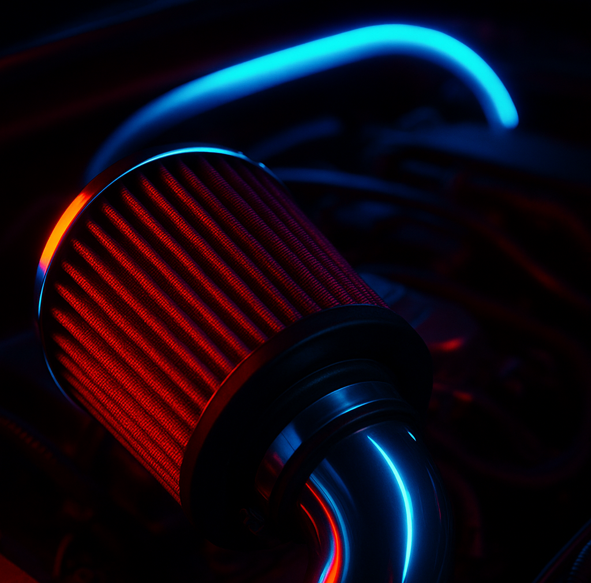

The Lungs of the Engine
Just like humans need air to breathe, engines need air to make power. The air mixes with fuel and burns inside the cylinders to create energy.The job of the air intake system is to bring clean, cool air into the engine — the more air, the better it performs. Cooler air = denser air = more oxygen → bigger explosions → more power.
Air Filter
Works like a mask for your engine. It removes dirt, dust, and debris from the air before it enters. A clean filter helps the engine “breathe” easily and stay healthy. A dirty or clogged filter can reduce power and hurt fuel efficiency. Upgrading to a “cold air intake” or performance filter can give your engine more airflow and a better sound.
Throttle Body

Think of it like the lungs’ opening. It controls how much air goes into the engine when you press the gas pedal. When you press the pedal, the throttle plate opens wider → more air rushes in → more power. Modern cars use electronic throttle control (no cable, just sensors). A larger throttle body can help engines that are tuned or boosted flow more air.
Intake Manifold

After passing the throttle, air enters the intake manifold. Its job is to split the air evenly so every cylinder gets the same amount. This makes the engine run smooth and balanced. It’s usually made from metal or plastic and shaped for airflow efficiency. Performance intake manifolds are designed to flow more air and improve high-RPM power.